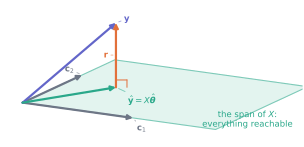
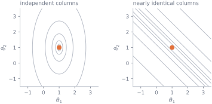
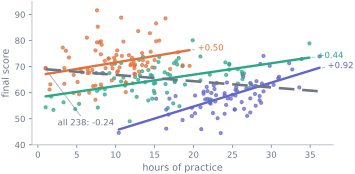

When there is no solution: least squares
Why this lesson is here
M10 ended on an unsolvable system, and said that with real data this is the normal case rather than a mishap. This lesson is the answer to then what.
If you cannot hit \(\mathbf{y}\), get as close to it as you can. That single sentence, made precise, produces the most-used calculation in applied statistics — every fitted line, every regression coefficient, every “controlling for” in a results table. It arrives here twice over: once from the calculus of M5 and once from the geometry of M8, and the two derivations meet at the same small system of equations. Meeting it from both sides is what makes the formula memorable instead of arbitrary.
Before you start
You should be able to:
- say when \(A\mathbf{x} = \mathbf{b}\) has a solution, in terms of the span — M10;
- set a derivative to zero and check you have a minimum — M5;
- take a dot product and recognise orthogonality — M8;
- form \(X^{\mathsf{T}}X\) and read its shape — M9.
Quick check. Which value of \(a\) makes \((3 - a)^2 + (7 - a)^2\) smallest?
TipShow the answer
Differentiate: \(-2(3 - a) - 2(7 - a) = 0\), so \(4a = 20\) and \(a = 5\) — the mean of 3 and 7, exactly as M5 found in general.
That is least squares with one parameter and no predictors. Everything in this lesson is that calculation with more columns.
The idea
We want \(X\boldsymbol{\theta} = \mathbf{y}\) and cannot have it: by the column reading of M9, \(X\boldsymbol{\theta}\) can only ever land inside the span of \(X\)’s columns, and M10 showed that the cohort’s \(\mathbf{y}\) is outside it.
So change the question. Among all the points the span can reach, which is nearest to \(\mathbf{y}\)? “Nearest” means smallest distance, and distance is the length of M8, so we are choosing \(\boldsymbol{\theta}\) to minimise
\[ \lVert \mathbf{y} - X\boldsymbol{\theta} \rVert^{2} = \sum_{i=1}^{n}\bigl(y_i - (X\boldsymbol{\theta})_i\bigr)^{2}, \]
the sum of squared residuals. Hence least squares.
Geometry answers this before any algebra does. The nearest point of a plane to a point off it is the foot of the perpendicular — any other point in the plane is further away, by Pythagoras. So the winning \(\boldsymbol{\theta}\) is the one whose residual sticks straight out of the span:
That right angle is the whole of least squares. Turning it into equations takes three lines, and the next section does it twice.
The mechanics
Route one: geometry
The residual \(\mathbf{r} = \mathbf{y} - X\hat{\boldsymbol{\theta}}\) must be perpendicular to the span, and the span is built from the columns of \(X\), so it is enough for \(\mathbf{r}\) to be orthogonal to every column. By M8, orthogonal means dot product zero; by M9, all those dot products at once are \(X^{\mathsf{T}}\mathbf{r}\). So
\[ X^{\mathsf{T}}\bigl(\mathbf{y} - X\hat{\boldsymbol{\theta}}\bigr) = \mathbf{0} \qquad\Longleftrightarrow\qquad X^{\mathsf{T}}X\,\hat{\boldsymbol{\theta}} = X^{\mathsf{T}}\mathbf{y} . \]
These are the normal equations — “normal” in its geometric sense of at right angles, nothing to do with the normal distribution. M9 found \(X^{\mathsf{T}}\mathbf{r} = \mathbf{0}\) by computing it on the cohort and M10 solved the resulting system; this is where it comes from.
Route two: calculus
Take the same quantity and minimise it as a function of the parameters, exactly as in M6. With \(r_i = y_i - \sum_j x_{ij}\theta_j\),
\[ L(\boldsymbol{\theta}) = \sum_i r_i^2 , \qquad \frac{\partial L}{\partial \theta_j} = \sum_i 2 r_i \frac{\partial r_i}{\partial \theta_j} = -2\sum_i x_{ij}\, r_i = -2\,(\text{column } j) \cdot \mathbf{r} . \]
Setting every partial derivative to zero says every column has zero dot product with \(\mathbf{r}\) — which is \(X^{\mathsf{T}}\mathbf{r} = \mathbf{0}\) again. The two routes are the same statement in different languages.
And any stationary point really is a minimum, not just a candidate. \(L\) is a sum of squares, so it is never negative and it has no maximum; it is a bowl, and every flat place on a bowl is at the bottom. That is the M5 check, done once for the whole family of problems rather than case by case.
What is not guaranteed is that the flat place is a single point. If two columns of \(X\) are identical the bowl has a level trough running along it, every point of which is an equally good answer, and \(L\) does not grow at all as you slide along it. That is the next section.
When the answer is unique
\(X^{\mathsf{T}}X\) is invertible exactly when the columns of \(X\) are linearly independent — when no column is a combination of the others. Then
\[ \hat{\boldsymbol{\theta}} = (X^{\mathsf{T}}X)^{-1}X^{\mathsf{T}}\mathbf{y}, \]
a formula worth recognising and, as M10 insisted, not worth computing that way.
If two columns are identical, the span is unchanged by trading one for the other and there are infinitely many equally good \(\hat{\boldsymbol{\theta}}\). The interesting case is the near miss: columns that are nearly dependent leave a long flat valley in the loss, along which the fit barely changes while the coefficients move a great deal.

Why libraries do not form \(X^{\mathsf{T}}X\)
Multiplying \(X\) by its own transpose squares the condition number of M10: \(\operatorname{cond}(X^{\mathsf{T}}X) = \operatorname{cond}(X)^2\). On the cohort’s two-column design that is a jump from 41.4 to 1717, which costs nothing; on a badly scaled design it is the difference between an answer and noise. So write
theta, *_ = np.linalg.lstsq(X, y, rcond=None)which works on \(X\) directly and never forms \(X^{\mathsf{T}}X\) at all. The normal equations are how you understand least squares; lstsq is how you compute it.
Worked example
Adding one column reverses the answer.
Fit the cohort two ways: score on practice hours alone, then score on practice hours and the diagnostic score taken on arrival.
import numpy as np
import pandas as pd
cohort = pd.read_csv("data/cohort.csv")
usable = cohort[cohort["final_score"].between(0, 100)]
h = usable["hours_practice"].to_numpy()
g = usable["diagnostic_score"].to_numpy()
y = usable["final_score"].to_numpy()
ones = np.ones(len(y))
for name, X in [("1 + hours", np.column_stack([ones, h])),
("1 + hours + diagnostic", np.column_stack([ones, h, g]))]:
theta, *_ = np.linalg.lstsq(X, y, rcond=None)
residual = np.linalg.norm(y - X @ theta)
print(f"{name:<24} theta = {np.round(theta, 4)}")
print(f"{'':24} ||r|| = {residual:.4f} cond(X) = {np.linalg.cond(X):.1f}")1 + hours theta = [69.2261 -0.2408]
||r|| = 125.4985 cond(X) = 41.4
1 + hours + diagnostic theta = [8.9129 0.9156 0.6619]
||r|| = 70.6309 cond(X) = 614.1The coefficient on hours of practice goes from \(-0.2408\) to \(+0.9156\). Not smaller, not larger — the opposite sign. Nothing was done to the data between the two lines, and neither fit is an error; they are answers to different questions.
The explanation is in one number:
print(f"corr(hours, diagnostic) {np.corrcoef(h, g)[0, 1]:+.4f}")
print(f"corr(diagnostic, score) {np.corrcoef(g, y)[0, 1]:+.4f}")corr(hours, diagnostic) -0.8130
corr(diagnostic, score) +0.6579Students who arrive stronger practise less. So “hours of practice”, on its own, is partly acting as a marker for arriving weak — and arriving weak predicts a lower final score. The first fit measures that whole tangle. The second holds the diagnostic score fixed, so its hours coefficient answers a narrower and much more useful question: among students who arrived equally prepared, what does an extra hour of practice go with? Just under a mark.
You can see both facts at once by splitting the cohort into three bands of roughly equal size by diagnostic score:

The residual norm also falls, from \(125.50\) to \(70.63\), so the second model predicts better. That proves nothing at all. Adding a column can never increase the sum of squares, because the old fit remains available by giving the new column a coefficient of zero — and for any column that is not already a combination of the existing ones, the fall is strict. A column of pure random noise qualifies, as the check at the end of this lesson demonstrates. A smaller residual is not evidence that a column belongs in the model.
What this example does show is that a regression coefficient has no meaning on its own. “The effect of practice is \(-0.24\)” and “the effect of practice is \(+0.92\)” are both true statements about the same 238 students, and the thing that distinguishes them is what else was in the matrix. S12 returns to this with the background groups, where it has a name.
Try it yourself
Exercise 1 Take \(X\) to be a single column of ones, so the model is “predict the same value for everybody”. Write down \(X^{\mathsf{T}}X\) and \(X^{\mathsf{T}}\mathbf{y}\), and solve the normal equations.
TipShow the solution
\(X\) is \(n \times 1\), so \(X^{\mathsf{T}}X\) is \(1 \times 1\):
\[X^{\mathsf{T}}X = \sum_{i=1}^n 1 \times 1 = n, \qquad X^{\mathsf{T}}\mathbf{y} = \sum_{i=1}^n 1 \times y_i = \sum_i y_i .\]
So \(n\hat{\theta} = \sum y_i\) and \(\hat{\theta} = \bar{y}\), the mean.
This is M5’s result arriving by a different road, and it is worth noticing what the geometry says about it: the span of a single ones column is the set of vectors with all entries equal, and the closest such vector to \(\mathbf{y}\) is the one at \(\mathbf{y}\)’s mean. The residual is then \(\mathbf{y} - \bar{y}\), which is orthogonal to the ones column — the fact you proved in M8, Exercise 3.
Exercise 2 A fit gives \(X^{\mathsf{T}}X = \begin{pmatrix} 4 & 6 \\ 6 & 14\end{pmatrix}\) and \(X^{\mathsf{T}}\mathbf{y} = \begin{pmatrix} 10 \\ 22 \end{pmatrix}\). Find \(\hat{\boldsymbol{\theta}}\), and confirm it is the unique answer.
TipShow the solution
\(\det = (4)(14) - (6)(6) = 56 - 36 = 20 \neq 0\), so \(X^{\mathsf{T}}X\) is invertible: the columns of \(X\) are independent and the answer is unique.
Eliminate: from \(4\theta_1 + 6\theta_2 = 10\) and \(6\theta_1 + 14\theta_2 = 22\), subtract \(1.5\times\) the first from the second to get \(5\theta_2 = 7\), so \(\theta_2 = 1.4\) and then \(\theta_1 = (10 - 8.4)/4 = 0.4\).
Check both equations: \(4(0.4) + 6(1.4) = 1.6 + 8.4 = 10\) ✓ and \(6(0.4) + 14(1.4) = 2.4 + 19.6 = 22\) ✓.
Exercise 3 Someone builds a design matrix with a column of hours of practice and a second column of the same hours expressed in minutes. What goes wrong, and what happens to the predictions?
TipShow the solution
The second column is \(60 \times\) the first, so the columns are dependent, the span is no bigger than it was with one of them, and \(X^{\mathsf{T}}X\) is singular. There are infinitely many \(\hat{\boldsymbol{\theta}}\): whatever \((\theta_1, \theta_2)\) works, so does \((\theta_1 + 60c,\ \theta_2 - c)\) for any \(c\), since the two changes cancel exactly.
For this \(X\) the predictions are unaffected. Every one of those parameter vectors produces the same \(X\hat{\boldsymbol{\theta}}\), because the closest point in the span is unique even when the recipe for reaching it is not. That is the distinction to carry away: collinearity destroys the interpretation of individual coefficients while the fitted values of a given fit stay put.
Be careful how far you take that. It says the projection is unique for a fixed design matrix; it does not say a nearly collinear fit is robust. Two designs differing in the fourth decimal place can span quite different sets and produce quite different fitted values. In practice you rarely get exact duplication — you get two columns measuring almost the same thing, which is the right-hand panel of the valley figure. lstsq returns an answer without complaint, and the coefficients are the first thing to distrust.
Check it in Python
First, that the two derivations and the library agree:
X = np.column_stack([ones, h])
normal = np.linalg.solve(X.T @ X, X.T @ y) # the normal equations
library, *_ = np.linalg.lstsq(X, y, rcond=None)
polyfit = np.polyfit(h, y, 1)[::-1] # intercept, slope
print(f"normal equations {normal}")
print(f"np.linalg.lstsq {library}")
print(f"np.polyfit {polyfit}")
print("all three agree:", np.allclose(normal, library) and np.allclose(normal, polyfit))normal equations [69.22611682 -0.24079311]
np.linalg.lstsq [69.22611682 -0.24079311]
np.polyfit [69.22611682 -0.24079311]
all three agree: TrueThen the claim that gives the method its name — that no other \(\boldsymbol{\theta}\) has a smaller sum of squares. Nudge the answer in every direction and watch the loss rise:
def loss(theta):
r = y - X @ theta
return r @ r
rng = np.random.default_rng(2026)
best = loss(library)
beaten = 0
for _ in range(20_000):
nudge = library + rng.normal(scale=0.05, size=2)
if loss(nudge) < best:
beaten = beaten + 1
print(f"loss at the least-squares answer {best:.6f}")
print(f"nudges that beat it, out of 20000: {beaten}")
print(f"and the residual is orthogonal to X: {np.allclose(X.T @ (y - X @ library), 0)}")loss at the least-squares answer 15749.873767
nudges that beat it, out of 20000: 0
and the residual is orthogonal to X: TrueTwenty thousand attempts and none of them wins, which is what “least” means. The orthogonality check on the last line is the same statement — the two are not independent pieces of evidence, they are the geometry and the arithmetic of one fact.
Next, that a falling residual means nothing. Add a column of pure noise — information that cannot possibly help — and watch the sum of squares drop anyway:
X0 = np.column_stack([ones, h])
theta0, *_ = np.linalg.lstsq(X0, y, rcond=None)
rss0 = ((y - X0 @ theta0)**2).sum()
print(f"1 + hours RSS {rss0:.4f}")
for trial in range(3):
noise = rng.normal(size=len(y))
Xn = np.column_stack([ones, h, noise])
thetan, *_ = np.linalg.lstsq(Xn, y, rcond=None)
rssn = ((y - Xn @ thetan)**2).sum()
print(f" + a column of random noise RSS {rssn:.4f} (fell by {rss0 - rssn:.4f})")
Xd = np.column_stack([ones, h, h])
thetad, *_ = np.linalg.lstsq(Xd, y, rcond=None)
print(f" + a duplicate of hours RSS {((y - Xd @ thetad)**2).sum():.4f} (unchanged)")1 + hours RSS 15749.8738
+ a column of random noise RSS 15671.2007 (fell by 78.6731)
+ a column of random noise RSS 15489.4165 (fell by 260.4573)
+ a column of random noise RSS 15734.5969 (fell by 15.2768)
+ a duplicate of hours RSS 15749.8738 (unchanged)Three columns of nonsense, three improvements. The only column that fails to improve the fit is the duplicate — and it fails because it adds nothing to the span, which is exactly the case the guarantee is silent about. Judging a model by whether the residual fell is judging it by something that was going to happen regardless.
Finally, why lstsq rather than the normal equations. Fit a polynomial of rising degree, where the columns \(1, t, t^2, \ldots\) become steadily more alike, and compare the two routes against an answer we know:
t = np.linspace(0, 1, 120)
print(f"{'degree':>7} {'cond(X)':>10} {'cond(X.T X)':>12} {'normal eqs':>12} {'lstsq':>10}")
for degree in (3, 7, 11):
Xp = np.column_stack([t**k for k in range(degree + 1)])
truth = np.ones(degree + 1)
yp = Xp @ truth # exactly solvable by construction
err_normal = np.abs(np.linalg.solve(Xp.T @ Xp, Xp.T @ yp) - truth).max()
err_lstsq = np.abs(np.linalg.lstsq(Xp, yp, rcond=None)[0] - truth).max()
print(f"{degree:>7} {np.linalg.cond(Xp):>10.1e} {np.linalg.cond(Xp.T @ Xp):>12.1e}"
f" {err_normal:>12.1e} {err_lstsq:>10.1e}") degree cond(X) cond(X.T X) normal eqs lstsq
3 1.2e+02 1.5e+04 1.6e-12 7.5e-15
7 1.2e+05 1.4e+10 2.9e-07 6.0e-12
11 1.2e+08 1.5e+16 6.0e-01 3.3e-09Two things to read off. cond(X.T X) really is cond(X) squared, in every row. And by degree 11 the normal equations return an answer wrong in the first decimal place while lstsq, working on the same data, is still correct to nine. The mathematics is identical; only the route differs.
Common wrong turns
Where this usually goes wrong
- Reading a coefficient without saying what else is in the model
- The cohort’s practice coefficient is \(-0.24\) alone and \(+0.92\) alongside the diagnostic score. Neither number means anything until you say which matrix it came out of.
- Treating a smaller residual as evidence
- Adding any column can only reduce the sum of squares, since the previous fit survives by giving the new column a zero coefficient. Improvement is automatic and therefore not informative.
- Computing \((X^{\mathsf{T}}X)^{-1}X^{\mathsf{T}}\mathbf{y}\) literally
-
It is the right formula and the wrong algorithm — it inverts a matrix (M10) whose condition number has already been squared.
np.linalg.lstsqdoes neither. - Confusing “the projection is unique” with “the predictions are stable”
- For a fixed \(X\), the closest point in the span is unique even when the \(\hat{\boldsymbol{\theta}}\) reaching it is not — so duplicate columns leave the fitted values of that fit alone while making the coefficients arbitrary. That is a statement about one design matrix, not a promise of robustness: nudge the data slightly and a nearly collinear fit can move its fitted values a long way too. Coefficients are the first casualty, not the only possible one.
- Thinking least squares requires a straight-line relationship
- The model must be linear in the parameters, not in the data. Fitting \(y = \theta_0 + \theta_1 t + \theta_2 t^2\) is a least-squares problem with three columns, and its curve is a parabola.
- Believing the minimum is the truth
- Least squares finds the closest point in the span of the columns you supplied. If the right column is not in \(X\), the answer is the best available lie, and the arithmetic will not mention it.
Check yourself
Answers are at the foot of the page. Give a reason as well as an answer.
What condition does least squares impose on the residual \(\mathbf{r}\)?
- \(\mathbf{r} = \mathbf{0}\)
- \(\mathbf{r}\) is orthogonal to every column of \(X\)
- \(\mathbf{r}\) is as small as the data allows in every entry
- \(\sum r_i = 0\)
That would put the line through every point, which is rarely possible. Least squares settles for a condition it can always meet.
Shrinking one residual usually grows another. The condition is about how \(\mathbf{r}\) sits relative to the columns of \(X\).
That follows from the condition when \(X\) has a column of ones, but it is a consequence, not the condition.
- Why is \(L(\boldsymbol{\theta}) = \lVert\mathbf{y} - X\boldsymbol{\theta}\rVert^2\) guaranteed to have a minimum rather than a maximum at its stationary point?
- A colleague adds a column and reports that the residual sum of squares fell. What have they demonstrated?
- \(\operatorname{cond}(X) = 10^{4}\). What is \(\operatorname{cond}(X^{\mathsf{T}}X)\), and roughly how many digits does solving the normal equations cost you?
- Two columns of \(X\) are nearly identical. Which of these become unreliable — the fitted values, the individual coefficients, or both?
TipShow the answers
(b). Orthogonality to every column is the defining condition, and it is what \(X^{\mathsf{T}}\mathbf{r} = \mathbf{0}\) says. (a) is what we wanted and could not have. (d) is implied by (b) whenever \(X\) contains a column of ones — the ones column’s dot product with \(\mathbf{r}\) is \(\sum r_i\) — but it is one consequence, not the condition. (c) is not a coherent requirement: residuals trade off against one another and cannot all be minimised at once.
Because \(L\) is a sum of squares: never negative, and with no maximum. So any flat place has to be a lowest point — a bowl has no summit. Note what this does not claim: if the columns of \(X\) are dependent the bottom is a level trough rather than a point, and there are infinitely many equally good answers. Guaranteed minimum, not guaranteed unique.
Nothing. The residual sum of squares cannot rise when a column is added, because the previous fit is still reachable by setting the new coefficient to zero. They have demonstrated that their arithmetic works.
\(\operatorname{cond}(X^{\mathsf{T}}X) = 10^{8}\), so roughly eight of the sixteen digits double precision offers, against about four if you work with \(X\) directly. That is the entire argument for
lstsq.The coefficients first and worst. For the design matrix in front of you the closest point in the span is unique, so \(X\hat{\boldsymbol{\theta}}\) is pinned down while the division of credit between two near-identical columns is not. But uniqueness is not stability: perturb the data a little and a nearly collinear fit can shift its fitted values as well. The safe summary is that the coefficients become untrustworthy immediately and the predictions are merely better behaved, not safe.